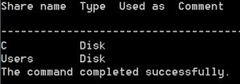
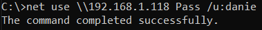
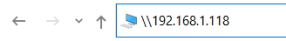

SMB share
Enumerate the shares
Once we know that a machine has the File Server service running (<20>), we can enumerate the shares
net view <target IP>

Set up a session with a target
set up a SMB session with the TargetIp, If we don not provide [password] the system will prompt us for it on the next line
net use \\[targetIP] [password] /u:[user]
net use \\[targetIP] [password] /u:[MachineName_or_Domain]\[user] #Some versions of Windows require us
# to specify the machine name before username

Now we can browser the share from the Windows Explorer


Drop SMB session
Multiple connections to a server or shared resource by the same user, using more than one user name, are not allowed.
Before doing a new connection we have to disconnect all previous connections to the server or shared resource
net use \\[targetIP] /del #drop single session
net use * /del #drop all SMB sessions for your current user